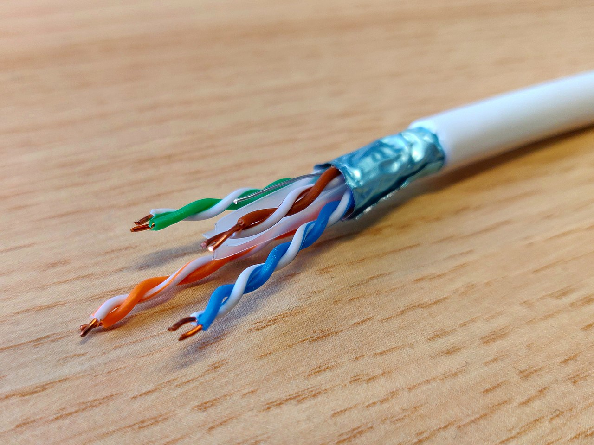

Las líneas de transmisión son estructuras conductoras o semiconductoras usadas para guiar energía de una sección a otra de un circuito o sistema. Tienen la carcaterística de que casi todas sus dimenciones son menores a la longitud de onda de la señal eléctrica que conduce.
Las líneas de transmisión mas usadas en los circuitos eléctricos son:
- El par trenzado.
- Cable coaxial.
- Microcinta (Microstrip).
- Guia de onda coplanar (Coplanar waveguide).
La estructura física de una línea de transmisión define sus características eléctricas y su posible aplicación. La teoría de líneas de transmisión estudia el comportamiento de estas estructuras y es el puente de unión entre la teoría de circuitos básica y el análisis de campos basado en las Ecuaciones de Maxwell.
Par trenzado
